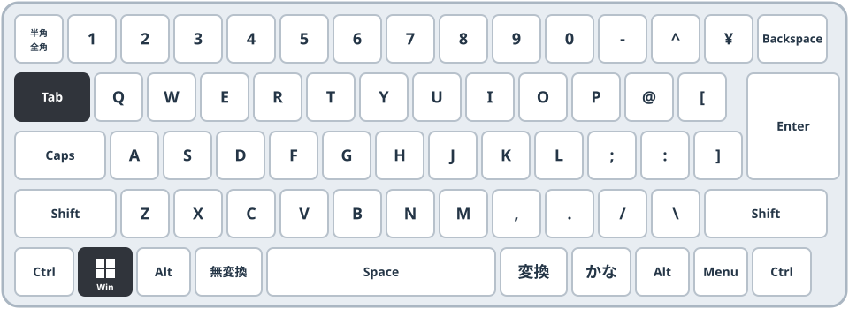
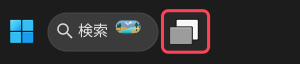

PC設定確認ステップ
STEP 2 がまだ完了していません。
先に戻る
STEP 3 タスクビューの不要なウィンドウを閉じる
未完了
GOAL
この状態になれば OK
いま
使っていない画面がたまっている
ゴール
✓ いま使う画面だけ
OK
タスクビューに、いま使う画面だけが並んでいる
2
やり方
Windows
＋
Tab
でタスクビューを開く
閉じたい画面にマウスを乗せる
右上の
✕
をクリック
終わったら
Esc
で戻る
タスクビューの開き方がわからない場合
方法A
キーボードで Windows ＋ Tab

方法B
タスクバーのボタンをクリック

メモ帳
電卓
エクスプローラー
Excel
マウスを乗せて、右上の ✕ をクリック
✓ 使う画面だけ残った
デスクトップ 1
＋ 新しいデスクトップ
▶
動きで見る
うまくできない方は、動画で確認
← 前へ：STEP 2
STEP 3 を完了にする
確認を終える →